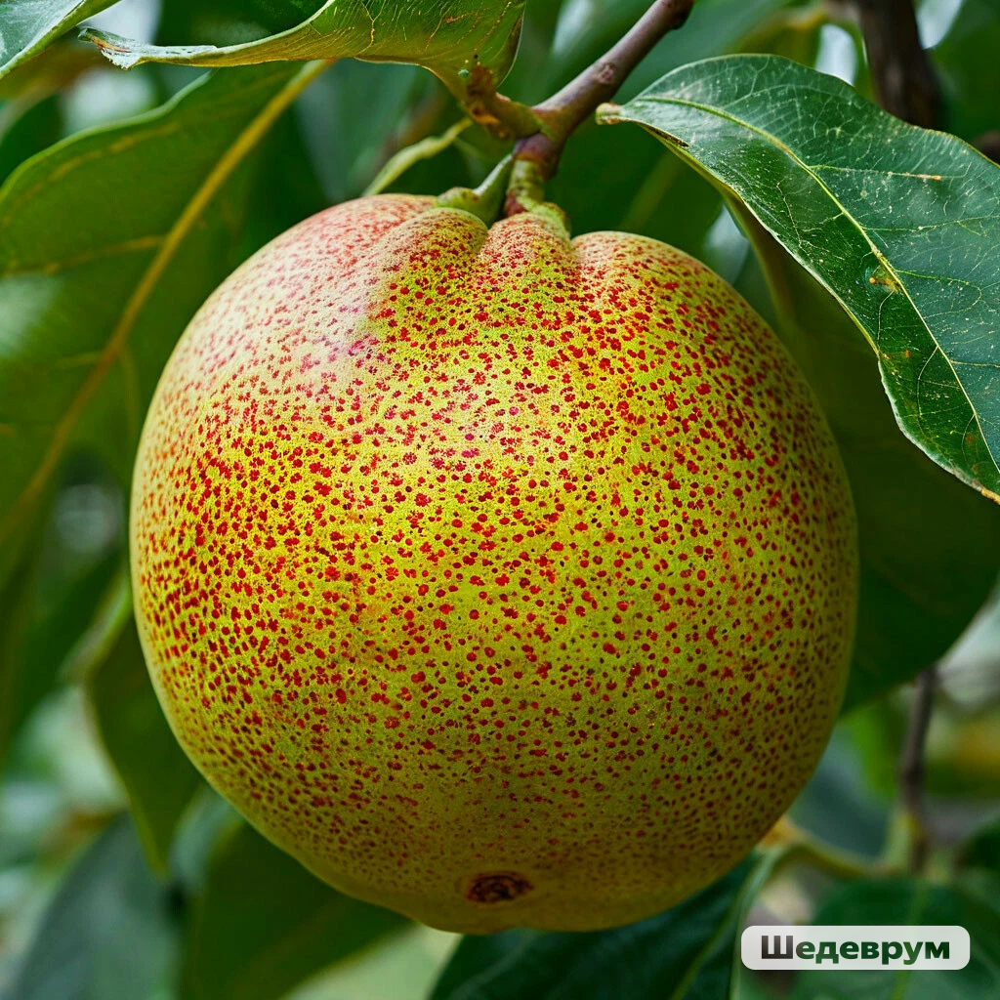

Что же такое помкада?
Помкада — это уникальный экзотический фрукт, который произрастает на деревьях в далёких тропических лесах. Этот фрукт имеет необычную форму и яркую окраску, что делает его настоящим украшением природы.

Матильда Штрихкодовна
 Амбассадор бренда "Помкада".
Амбассадор бренда "Помкада".